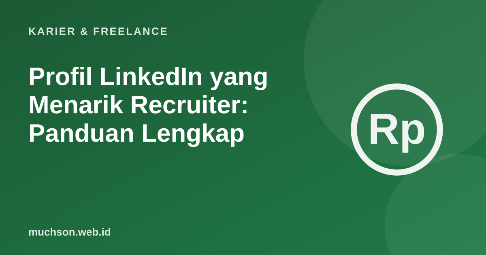

Beranda › Artikel › Karier & Freelance
Karier & FreelanceProfil LinkedIn yang Menarik Recruiter: Panduan Lengkap
Banyak recruiter memakai LinkedIn untuk mencari kandidat, bukan hanya menerima lamaran. Profil yang lengkap dan jelas membuat Anda ditemukan dalam pencarian dan dihubungi lebih dulu. Panduan ini membahas setiap bagian profil dari sudut pandang orang yang membacanya: recruiter yang sibuk.

Cara recruiter membaca profil
Recruiter biasanya mencari dengan kata kunci (jabatan, keahlian, lokasi), lalu memindai hasil dengan cepat. Yang terlihat pertama: foto, nama, headline, dan lokasi. Bila menarik, mereka membuka profil dan membaca About serta pengalaman terakhir.
Bagian demi bagian
Foto dan banner
Foto wajah jelas, pencahayaan baik, latar sederhana, ekspresi ramah. Banner bisa dipakai untuk pesan singkat atau visual yang relevan dengan bidang Anda.
Headline: bukan hanya jabatan
| Lemah | Lebih kuat |
|---|---|
| "Mahasiswa" | "Mahasiswa Informatika · Frontend (React) · Mencari magang 2027" |
| "Staff Admin" | "Admin Keuangan · Excel, rekonsiliasi bank · Membantu UMKM rapi pembukuan" |
| "Freelancer" | "Desainer UI/UX untuk aplikasi edukasi · Figma · 20+ proyek" |
About: cerita singkat Anda
Tulis 3-5 paragraf pendek: siapa Anda dan apa yang Anda kerjakan, keahlian dan bukti hasil, apa yang sedang dicari, dan cara menghubungi. Gunakan kata kunci bidang Anda secara alami agar mudah ditemukan.
Pengalaman: hasil, bukan daftar tugas
Sama seperti CV, tulis poin dengan pola kata kerja + apa yang dilakukan + hasil. "Membangun dasbor penjualan mingguan yang dipakai 5 kepala cabang" lebih kuat dari "bertanggung jawab atas laporan".
Keahlian, rekomendasi, dan unggulan (Featured)
- Pilih keahlian yang relevan dengan target pekerjaan, letakkan yang terpenting di atas.
- Minta rekomendasi singkat dari atasan, dosen, atau klien yang menyebut hal spesifik.
- Gunakan bagian Featured untuk portofolio, artikel, atau proyek terbaik.
Daftar periksa profil
Aktif tanpa harus menjadi influencer
Profil yang aktif lebih mudah ditemukan dan diingat. Tidak perlu memposting setiap hari. Cukup kebiasaan kecil:
- Komentar yang bermakna di unggahan orang di bidang Anda (bukan sekadar "mantap").
- Satu unggahan per minggu atau dua minggu: pelajaran dari proyek, ringkasan buku, atau hasil belajar.
- Personalisasi pesan saat mengirim permintaan koneksi.
Menulis tentang apa yang sedang Anda pelajari adalah cara yang jujur dan efektif membangun reputasi, terutama bagi lulusan baru yang belum punya banyak pengalaman kerja.
Tanya jawab
Apa isi headline LinkedIn yang baik?
Apakah perlu foto profil di LinkedIn?
Apakah fitur Open to Work merugikan?
Seberapa sering harus memposting?
Sumber dan bacaan lanjut
- LinkedIn Help Center
- CV ramah ATS (artikel terkait)
- Portofolio developer yang dilirik recruiter (artikel terkait)